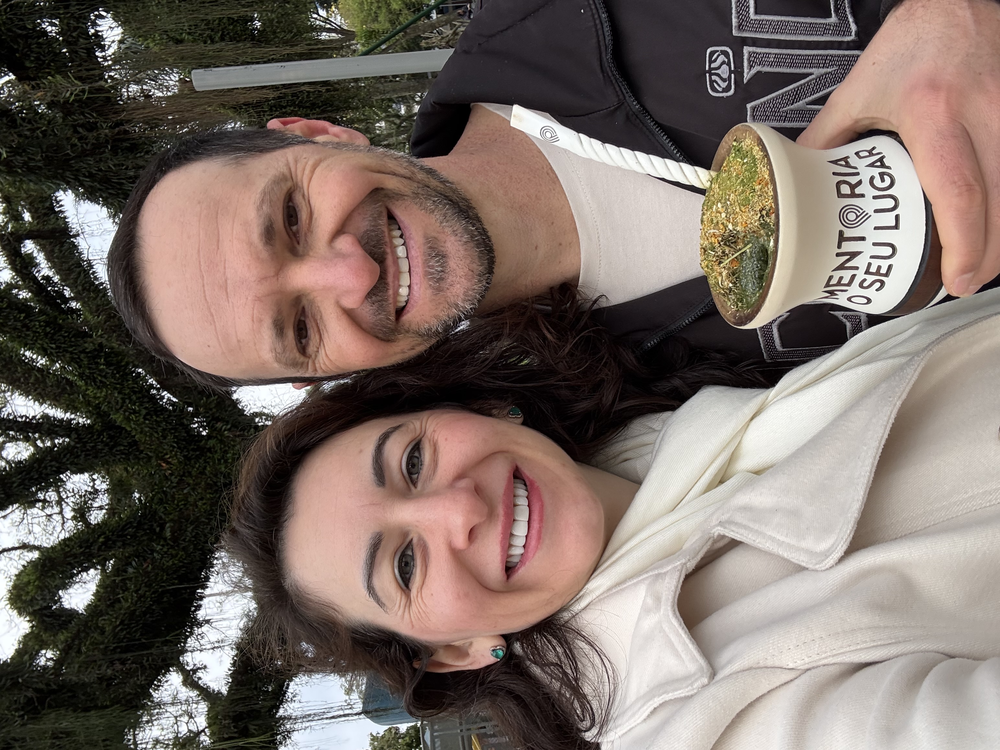

Criança
O medo de perder faz você se anular, insistir ou aceitar menos do que precisa.
Descubra de qual Lugar Emocional você está se relacionando e por que alguns conflitos continuam se repetindo, mesmo quando você tenta fazer diferente.
Em três encontros gratuitos, você vai reconhecer os lugares emocionais que fazem você se anular, atacar, carregar, controlar, fugir ou se afastar, mesmo quando ainda existe amor.
COMEÇA...
Por fora, a vida continua. Mas por dentro, você começa a se sentir sozinha.
Você repete o Lugar Emocional que aprendeu a ocupar. Enquanto não reconhece esse Lugar, tenta mudar o relacionamento repetindo justamente o movimento que mantém o problema.
O medo de perder faz você se anular, insistir ou aceitar menos do que precisa.
O medo de ser ferida faz qualquer conversa parecer uma ameaça.
Você sente que, se parar de carregar o outro, tudo pode desmoronar.
Você cobra, corrige e assume o que o outro também precisaria sustentar.
Você se cala, se afasta ou ocupa a mente para não enfrentar o que sente.
Um oferece cada vez mais e começa a se contentar com cada vez menos.
Vocês continuam juntos, mas emocionalmente já não conseguem chegar um até o outro.
Setembro de 2026. Sempre às 20h, no horário de Brasília.
Conheça os 7 Lugares e reconheça os movimentos que mais aparecem em você.
Entenda como o seu Lugar encontra o Lugar do outro e mantém conflitos, cobranças e afastamentos.
Descubra o primeiro passo para voltar ao seu lugar, sem deixar de ser quem é para conseguir ser amada.
É sobre como você se posiciona, se protege, entrega, recebe e escolhe.

Ao longo de 15 anos acompanhando mulheres e casais, Alinne e Evandro presenciaram transformações que marcaram profundamente essa caminhada: casais que restauraram o diálogo e voltaram a se escolher, mulheres que romperam padrões, recuperaram a confiança no amor, construíram novos relacionamentos e se casaram.
Foi unindo essa experiência prática aos estudos sobre o comportamento humano que eles compreenderam algo essencial: muitas pessoas não sofrem por falta de amor, mas porque ainda tentam amar a partir de medos, feridas e movimentos emocionais construídos ao longo da própria história.
Dessa compreensão nasceram os 7 Lugares Emocionais, um caminho para reconhecer de onde cada pessoa está se relacionando, transformar os movimentos que mantêm o sofrimento e aprender a construir relacionamentos com mais maturidade, equilíbrio e consciência, sem deixar de ser quem é para conseguir ser amada.
Durante três encontros, você poderá olhar para a sua história com uma compreensão que pode mudar a forma como enxerga seus conflitos, suas escolhas e a si mesmo.
Ao clicar, você será direcionado ao grupo da imersão no WhatsApp.